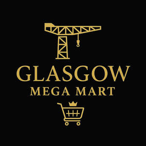

Trade Mark Journal No.2025/046 14 November 2025
UK00004287076 30 October 2025 (7,9,10,11,17,21,27,28,35)

- Class 7
- Cultivators [power lawn and garden tools]; Chippers [power lawn and garden tools]; Shredders [power lawn and garden tools]; Gardening tools (Electric -); String trimmers [power lawn and garden tools]; Tools for machine tools; Tools for use with machine tools; Lawn and garden tilling machines; Scarifying machines for garden use; Boring tools [machine tools]; Garden tilling machines; Electric kitchen tools; Agricultural machine tools; Kitchen tools [electric utensils]; Ceramic tips [tools for machines]; Machine tools; Cutting tools for use in powered hand-held tools; Line trimmers for garden use; Power-operated lawn and garden tillers; Edging tools [machines]; Tools for machines; Garden rotavators; Guidance frameworks for cutting tools [machine]; Agricultural implements, other than hand-operated hand tools; Cutters being machine tools; Grinders being power tools; Sharpening machines for tools (Electric -); Power tools; Ceramic tools for machines; Beaters being electric appliances; Kitchen machines, electric; Electric kitchen machines; Electric motors for refrigerators; Electrical appliances used in kitchen for crushing; Electrical appliances used in kitchen for whisking; Electrical appliances used in kitchen for grinding; Electrical appliances used in kitchen for milling; Kitchen grinders, electric; Electric kitchen mixers; Crushers for kitchen use, electric; Electric motors for heating installations; Kitchen knives (Electric -); Electric generators; Electric blenders; Electric lawnmowers; Electric juicers; Electric compressors; Electric motors for machines; Electric knives; Knives, electric; Electric alternators for machines; Electric kitchen appliances for chopping, mixing, pressing; Domestic blenders [electric]; Three dimensional (3D) printers; Lifting ramps; Car lifts; Vacuum cleaner hoses; Vacuum cleaner bags; Bags (Vacuum cleaner -); Vacuum cleaners; Hoses for vacuum cleaners; Suction cleaning machines [vacuum cleaners]; Vacuum cleaner bags of card; Vacuum cleaner bags of paper; Car vacuum cleaners; Vacuum cleaner bags of cardboard; Brushes for vacuum cleaners; Dust filters for vacuum cleaners; Vacuum cleaners for the cleaning of surfaces; Cordless vacuum cleaners; Hoses for electric vacuum cleaners; Wet vacuum cleaners; Electric vacuum cleaners; Suction nozzles for vacuum cleaners; Electric carpet vacuum cleaners; Stick-type vacuum cleaners; Household vacuum cleaners; Robotic vacuum cleaners; Vacuum cleaners for cars; Industrial floor cleaning machines [vacuum cleaners]; Domestic vacuum cleaners; Dust filters and bags for vacuum cleaners; Bags for electric vacuum cleaners; Electric vacuum cleaners for bedding; Hand-held vacuum cleaners; Bags of plastics for vacuum cleaners; Vacuum cleaning machines for use in households; Electric domestic vacuum cleaners; Vacuum cleaner attachments for disseminating perfumes and disinfectants; Vacuum pads for vacuum pump machines; Paper bags for vacuum cleaners; Bags of paper for vacuum cleaners; Wet and dry vacuum cleaners; Electric vacuum cleaners for industrial use; Replacement bags of paper for vacuum cleaners; Electric vacuum cleaners for domestic use; Electrical vacuum cleaners for domestic use; Industrial vacuum machines for cleaning; Vacuum cleaners for household purposes; Vacuum filters; Vacuum cleaners for industrial purposes; Hand held vacuum cleaners (Electric -); Steam cleaners; Carpet cleaning machines; Machines for carpet cleaning; Electrical carpet cleaning [shampooing] machines; Vacuum pumps; Central vacuum cleaning apparatus; Robotic cleaning [vacuuming] machines for floors; Central vacuum cleaning installations; Air cleaners [air filters] for engines; Electric fan units for vacuum cleaners; Carpet cleaning machines [electric]; Electric vacuum cleaners and their components; Hand held vacuum cleaners (Electric -) with disposable chambers; Air jet cleaners (Electric -); Vacuum bags; Filters for cleaning cooling air, for engines; Multi-purpose steam cleaners; Industrial cleaning machines [shampooers]; Steam cleaners [machines]; Vacuum pump installations; Dry cleaning [laundry] machines; Shoe cleaners [brushes, electric]; Steam cleaning machines; Vacuum pumps [machines]; Pumps (Vacuum -) [machines].
- Class 9
- Phone cases; Cell phone cases; Mobile phone cases; Mobile telephone cases; Cases for mobile phones; Cellular telephone cases; Cases for telephones; Carrying cases for cell phones; Leather cases for mobile phones; Laptop cases; Camera cases; Keyboard cases for smartphones; Battery cases; Cases for headphones; Computer cases; Leather cases for smartphones; Carrying cases for mobile computers; Cell phone covers; Tablet computer cases; Cases for tablet computers; Chargers for cell phone; Mobile phone covers; Sunglass cases; Laptop carrying cases; Waterproof camera cases; Mobile phone chargers; Leather cases for tablet computers; Mobile phone screen protectors; Mobile phone speakers; Protective cases for laptops; Cell phone battery chargers; Cell phones; Hands-free headsets for cell phones; Mobile phone battery chargers; Hands-free holders for cell phones; Phone plugs; Notebook computer carrying cases; Hands-free microphones for cell phones; Mobile phone connectors for vehicles; Ear phones; Dashboard mats adapted for holding cell phones and smartphones; Ring stands for cell phones; Headphones for smart phones; Flip covers for mobile phones; Wireless headsets for mobile phones; Screen protectors for cell phones; Chargers for mobile phones; Devices for hands-free use of mobile phones; Dashboard mats adapted for holding mobile telephones and smartphones; Internet phones; Headsets for mobile telephones; Auxiliary speakers for mobile phones; Earphones for smartphones; Protective covers for cell phones; Telephone cable heads; Screen protectors for mobile telephones; Hands free kits for phones; Chargers for mobile telephones; Head protection; Electrical cable; USB flash drives with micro USB connectors compatible with mobile phones; Universal serial bus [USB] dongle [Wireless network adapters]; USB cables for cellphones; USB cables; USB Dongles [Wireless network adapters]; USB chargers; Battery chargers; Car charger; Battery chargers for mobile phones; Wireless battery chargers; Cell phone battery chargers for use in vehicles; Electric-car charger; Battery chargers for tablet computers; Battery chargers for use with telephones; Battery chargers for laptop computers; Chargers; Electric battery chargers; Chargers for batteries; Chargers for smartphones; Portable chargers; Wireless chargers; Joystick chargers; Chargers for electric batteries; Battery adapters; Fast chargers for mobile devices; Dustproof plugs for jacks of mobile phones; Battery chargers for electronic cigarettes; USB chargers adapted for car cigarette lighter sockets; USB chargers for electronic cigarettes; Battery charging equipment; Battery charge devices; Car speakers; Holders for cell phones; Mobile phone ring stands; Holders adapted for cell phones and smartphones; Holders adapted for mobile phones; Sunglasses; Cases for eyeglasses and sunglasses; Frames for sunglasses; Sunglasses frames; Fashion sunglasses; Chains for spectacles and for sunglasses; Chains for spectacles and sunglasses; Covers for sunglasses; Chains for sunglasses; Glasses; USB adapters; Cable adapters; Ethernet adapter; Ethernet adapters; Adapter cables for headphones; Adapter cables (Electric -); Electric adapter cables; Cable connectors; Adapter plugs; Modem cables; USB modems; Luminous USB cables; Cable modems; Electrical cable connectors; Coaxial cable; Electric plug adapters; USB wireless routers; Plug adaptors; USB port cards; Coaxial adaptors; Audio cable; USB hubs; Plug connectors; Computer network adapters; Electric wire and cable; Electrical adapters; Power banks; Power cables; Power switches; Screen savers; Earbuds; Earphones; Headphones; In-ear headphones; Wireless headphones; Stereo headphones; Ear pads for headphones; Music headphones; Two-way plugs for headphones; Wireless headsets; Noise cancelling headphones; Headphone amplifiers; Earphones for cellular telephones; Computer mouse; Mouse pads; Mouse mats; Computer mouse pads; Computer keyboard keycaps; Keyboard terminals; Keyboards; Computer keyboard controllers; Computer keyboards; Wireless keyboards; Wrist rest pads for keyboards; Wireless computer mice; Mouse [computer peripheral]; Wireless keypads; Laptop bags; Laptop computers; Laptop covers; Laptop sleeves; Laptops [computers]; Notebook computers; Netbook computers; Selfie sticks used as smartphone accessories; Covers for tablet computers; Computer cables; Bags adapted for laptops; Personal home computers; Home cinema systems; Home theater projectors; Electronic security systems for home network; Lap Top computers; Level meters; Laboratory instruments [other than for medical use]; Electric toy train transformers; Electric batteries for powering electric vehicles; Batteries, electric; Electric batteries; Electric phonographs; Batteries for electric vehicles; Electric batteries for vehicles; Batteries, electric, for vehicles; Electric transformers; Electric doorbells; Electric buzzers; Wires, electric; Remote control units; Remote control apparatus for starting vehicles; Remote control sockets; Remote control receivers; Electric wire; Electric cables; Vacuum tubes.
- Class 10
- Massage apparatus, electric or non-electric; Manual massage instruments; Electric massage apparatus for household use; Electric massage apparatus for personal use; Electric esthetic massage apparatus; Electric massage rollers; Electric massage chairs; Electric massage guns; Non-electric massage apparatus; Electric scalp massagers for household use; Massage appliances; Electric warming pads for medical use; Vibration generating apparatus for massage; Foot massage apparatus; Orthopaedic supports; Orthopaedic compression supports; Arch supports [orthopaedic]; Heel supports for orthopaedic use; Orthopedic support bandages; Ankle supports for medical use; Knee supports for medical use; Wrist supports for medical use; Support bandages.
- Class 11
- Electric domestic cooking appliances; Electric griddles [cooking appliances]; Electric refrigerators; Electric cooktops; Electrical appliances for cooking; Electric toasters; Electric stoves; Electric ovens; Appliances for heating; Electric kitchen ovens; Electric cookers; Electric appliances for making yoghurt; Electric dehumidifiers; Electric heaters; Electric appliances for making yogurt; Yogurt (Electric appliances for making -); Electric coffeepots; Coffeepots, electric; Electric hobs; Electric kettles; Kettles, electric; Electric boilers; Electric toaster ovens; Lamps (Electric -); Electric lamps; Electric lighting; Electric rotisseries; Electric bulbs; Electric toasters [for household purposes]; Gas-powered griddles [cooking appliances]; Electric grills; Electric refrigerators [for household purposes]; Electric humidifiers; Electric griddles; Electric hotplates; Electric lights; Electric radiators; Radiators, electric; Saucepans (Electric -); Electric cooking utensils; Cooking utensils, electric; Electric utensils for cooking; Gas cooking appliances; Electric lighting fixtures; Cordless electric kettles; Appliances for heating foodstuffs; Electric woks; Woks (Electric -); Electric radiant heaters for household use; Electric flashlights; Sterilizers for medical instruments; Sterilisers for medical instruments; Sterilization units for medical instruments; Sterilisers for surgical instruments; Sterilizers for surgical instruments; Sterilisers for dental instruments; Electric surface heating tapes; Electric pans; Electric blankets; Water cooling apparatus; Electric water heating apparatus; Steam heating apparatus [for industrial purposes]; Water heating installations; Hot water heating apparatus; Steam heating apparatus; Hot-water space heating apparatus [for industrial purposes]; Heating, ventilating, and air conditioning and purification equipment (ambient); Feeding apparatus for heating boilers; Cooking, heating, cooling and preservation equipment, for food and beverages; Heating apparatus and installations; Apparatus and installations for heating; Cooling installations for water; Installations for cooling water; Vacuum steam heating apparatus; Gas boilers for water heating; Gas pre-heating apparatus for industrial use; Vacuum lamps; Heat pads for warming.
- Class 17
- Electrical tape; Electrical insulating tape; Electrical insulation tape; Electrical tapes; Duct tape; Tape (Insulating -); Insulating tape; Electrical insulating tapes; Glass fiber electrical insulating tape; Rubber tape for insulating; Insulating tape and band; Strapping tape; Insulators for electric cables; Anti-corrosion tape; Anti-vibration tape; Gaffer tape; Tapes (Adhesive -) for electrical insulating purposes; Stuffing of rubber or plastic; Rubber sheets for insulating; Padding materials of rubber or plastic; Foam rubber; Stuffing of rubber or plastics; Silicone rubber; Rubber; Padding materials of rubber or plastics; Recycled rubber mixed with plastic material; Electrical insulating rubber products; Rubber for electrical insulation; Fittings, not of metal, for flexible pipes; Flexible pipes, not of metal; Junctions, not of metal, for flexible pipes; Fittings, not of metal, for rigid pipes; Flexible hoses, not of metal; Flexible pipes, tubes, hoses and fittings therefor (including valves), and fittings for rigid pipes, all non-metallic; Flexible tubes, not of metal; Tubes (Flexible -), not of metal; Reinforcing materials, not of metal, for pipes; Pipes (Reinforcing materials, not of metal for -); Junctions, not of metal, for rigid pipes; Flexible pipes, tubes, hoses, and fittings therefor, including valves, non-metallic; Flexible hose pipes of plastic; Non-metal fittings for flexible compressed air pipes; Compressed air pipe fittings, not of metal; Fittings (Compressed air pipe -), not of metal; Pipe connections (non-metallic -) [parts of rigid water pipes]; Flexible plastic pipe insulation; Non-metallic flexible hose pipes; Flexible hose pipes of rubber; Pipe fittings [junctions] (non-metallic -) parts of rigid water pipes; Pipe extensions (non-metallic -) [parts of rigid water pipes]; Flexible plumbing pipes of plastic; Junctions, not of metal, for pipes; Junctions for pipes, not of metal; Pipes (Junctions for -), not of metal; Fittings, not of metal, for compressed air lines; Pipe jackets, not of metal; Jackets (Pipe -), not of metal; Rubber tubes and pipes; Non-metallic flexible hoses of rubber reinforced with wires; Flexible plastic pipes for conveying natural gas; Flexible plastic conduits for plumbing use; Hose pipes made of plastic; Fittings [non-metallic] for flexible pipes; Inflatable articles for sealing pipes to allow welding; Flexible hoses for conveying liquids; Pipe linings (Non-metallic -) for sealing pipes; Inflatable articles for sealing pipes to allow cutting; Non-metallic flexible pipes; Pipe muffs, not of metal; Muffs (Pipe -), not of metal; Flexible hoses made of polymeric materials; Hose pipes made of textile materials; Couplings (Non-metallic -) for flexible pipes; Thermally insulated pipes made of plastic; Hose pipes made of rubber; Non-metallic flexible hoses made of rubber; Flexible pipes; Shaped strips of foam rubber for use as draught seals in doors; Shaped strips of rubber for use as draught seals in doors; Shaped strips of rubber for use as draught seals in windows; Shaped strips of foam rubber for use as draught seals in windows; Draught excluders of foam rubber strips; Draught excluders made of foam rubber; Draught excluders made of rubber; Rubber sheathing for gas lines for protection against salt water corrosion; Shaped strips of rubber for use as seals in the manufacture of doors; Rubber sheets for sealing; Sealing tape for use with insulated glass; Weather seals (Non-metallic -) for doors; Rubber for heat insulation; Washers of rubber for forming tight joints [other than for water taps]; Rubber sheathing for oil flow lines to protect against salt water corrosion; Under flooring sheets of rubber; Metal faced bituminous mastic sealing strip [other than for building]; Shaped strips of rubber for use as seals in the manufacture of windows; Seals (Non-metallic -) for floating roof storage tanks; Glass retaining strips of rubber; Rubber sheets for sealing purposes; Washers of rubber for the protection of hooks; Expanded closed cell rubber for sealing joints; Strips of rubber for protecting the edges of furniture; Draught excluding seals in the form of strips; Thermal insulation jackets for hot water cylinders; Door stops of rubber.
- Class 21
- Kitchen utensils; Household or kitchen utensils; Kitchen sponges; Containers for household use; Trash containers for household use; Disposable lids for household containers; Plastic bowls [household containers]; Laundry sorters for household use; Cleaning sponges; Sponges; Brushes for cleaning; Cleaning brushes; Cloths for cleaning; Cleaning cloths; Rags for cleaning; Cutting boards for the kitchen; Kitchen cutting boards; Kitchen boards for chopping; Chopping boards for kitchen use; Wooden chopping boards for kitchen use; Carving boards for kitchen use; Spoons (Basting -), for kitchen use; Kitchen utensils of silicon; Kitchen paper racks; Cutting boards; Vegetable brushes with peelers; Lemon squeezers [citrus juicers]; Vegetable mashers; Scourers for saucepans; Kitchen graters; Vegetable tongs; Steamers [cookware]; Juice squeezers; Lemon squeezers; Mop squeezers; Salad drainers (Hand-operated -); Spatulas; Food storage containers; Heat retaining containers for food; Plastic containers for dispensing food to pets; Water bottles; Plastic water bottles; Aluminum water bottles; Water bottles for bicycles; Plastic water bottles [empty]; Empty water bottles for bicycles; Bottles; Drinking bottles; Reusable plastic water bottles sold empty; Toothbrushes, electric; Electric toothbrushes; Electric and non-electric toothbrushes; Electric pet brushes; Heads for electric toothbrushes; Corkscrews, electric and non-electric; Electrical toothbrushes; Non-electric carpet cleaners; Cleaning cloth; Vacuum bottles; Microfiber cloths for cleaning; Vacuum jars; Rags [cloth] for cleaning; Cleaning (Rags [cloth] for -); Cleaning rags; Abrasive sponges for kitchen [cleaning] use.
- Class 27
- Wall paper of vinyl; Wall coverings of paper; Wall paper; Vinyl wall coverings; Plastic wall coverings; Wall coverings of plastic; Wallpaper in the nature of roomsize decorative adhesive wall coverings; Decorative wall hangings, not of textile.
- Class 28
- Toys; Toys, games, and playthings; Toys and playthings for pets; Ride-on toys; Plastic toys; Pinball games machines [toys]; Games; Toys, games and playthings for pet animals; Puzzles [toys]; Games consoles; Marbles for games; Games (Marbles for -); Pinball games; Miniatures for use in games; Balls for games; Games (Balls for -); Arcade games; Play mats for use with toy vehicles [playthings]; Marbles for playing games; Bowls [games]; Balls for playing games; Table-top games; Mobiles [toys]; Coin-operated games; Toys for sandpits; Controllers for toys; Outdoor toys; Sandbox toys; Action figures [toys or playthings]; Cards [games]; Chess games; Joysticks for video games; Educational toys; Hand-held consoles for playing video games; Gloves for games; Sports games; Low-friction game tables for playing hockey games; Play mats incorporating infant toys [playthings]; Electronic games; Novelty toys for playing jokes; Interactive gaming chairs for video games; Toys in the form of puzzles; Action toys; Noisemakers [toys]; Tabletop basketball games; Skittles [games]; Hockey games; Dice games; Checkers [games]; Checkers games; Model cars [toys or playthings]; Backgammon games; Tabletop games and gambling devices; Models being toys; Musical games; Hand-held pinball games; Toys for pets; Toys for animals; Whack-a-mole toys for pets; Balls for playing boules games; Boards games; Play mats for use with toy vehicles; Windup toys; Puzzle mats [toys]; Radio-controlled toys; Wind-up toys; Whistles [toys]; Portable games and toys incorporating telecommunication functions; Toy musical boxes [play articles]; Mechanical games; Toys for use in perambulators; Drawing toys; Dart games; Play mats containing infant toys; Stuffed toys; Music box toys; Bats for games; Inflatable toys; Crib toys; Cuddly toys; Board games; Plush toys; Parlor games; Scooters [toys]; Miniatures for use in war games; Miniature car models [toys or playthings]; Musical toys; Toys for babies; Wooden toys; Mah-jongg games; Fidget toys; Crib mobiles [toys]; Pet toys; Toys for dogs; Toys and playthings for pet animals; Toys for infants; Electronic games for the teaching of children; Bouncing toys; Manipulative games; Battery-operated action toys; Electronic toys; Toy playsets; Toys for cats; Video game apparatus, arcade games, and amusement machines ; Parlour games; Models for use with war games; Pool cushions [games equipment]; Stacking toys; Fantasy character toys; Developmental toys; Toys for birds; Articles of clothing for toys; Party games; Toy dolls; Building games; Compendiums of board games; Counters for games; Bath toys; Children's toys; Nets for ball games; Sketching toys; Game consoles; Novelty toys for parties; Bladders of balls for games; Batting gloves [accessories for games]; Electric action toys; Mechanical toys; Toy automobiles; Inflatable ride-on toys; Toy scooters; Toy bicycles; Ride-on toy vehicles; Toy cars; Toy guitars; Remote-controlled toy vehicles; Toy vehicles; Water toys; Toy pedal cars; Ride-on toy vehicles (Motorised -); Radio-controlled toy vehicles; Vehicles (Radio-controlled toy -); Smart electronic toy vehicles; Toy furniture; Plug-in bricks [toys]; Toy telephones; Wheeled toys; Remote-controlled submarines being toys; Children's ride-on toy vehicles; Rocking toys; Electronic action toys; Remote control toys; Electronic remote controlled toy vehicles; Remote controlled toys in the form of vehicles; Remote controlled scale model vehicles; Battery operated remote controlled toy vehicles; Remote controlled flying toys; Electronic remote controlled toys; Toy traffic control apparatus; Radio controlled toy model cars; Nets for sporting ball games; Arcade video game machines with multi-terminals; Bingo game playing equipment; Festive decorations, party novelties and artificial Christmas trees; Free-standing video games apparatus; Toy Christmas trees; Home video game machines; Billiard game playing equipment; Video game consoles; Volleyball game playing equipment; Bags specially adapted for handheld video games; Arcade video game machines; Electronic targets for games and sports; Arcade basketball shooting games; Hand held units for playing video games; Ornaments for Christmas trees, except illumination articles and confectionery; Christmas trees (Ornaments for -), except illumination articles and confectionery; Joysticks being parts of video game consoles; Pet toys made of rope; Pet toys containing catnip; Dog toys; Balancing bird toys; Toy birds; Toys for pet animals; Soft toys in the form of animals; Toy dogs; Toy hats; Snuffle mats being dog toys; Toy trick noisemakers; Toy flowers; Toy glow stick bracelets for parties; Play wands; Rubber character toys; Toy animals; Fluffy toys; Toy glow sticks; Toy balls; Infants' action crib toys; Pull toys; Stuffed toy animals; Imitation bones being toys for dogs; Disc toss toys; Toy fish; Multiple activity toys for babies.
- Class 35
- Online retail store services relating to clothing; Online retail store services in relation to clothing; Online retail services for downloadable virtual clothing; Advertising the goods and services of online vendors via a searchable online guide; Online retail store services relating to cosmetic and beauty products; Online marketing; Online advertising; Online retail services in relation to downloadable virtual handbags; Online retail services in relation to downloadable virtual clothing; Online retail services relating to jewelry; Online retail services for downloadable digital music; Online retail services in relation to downloadable virtual footwear; Online advertisements; Online ordering services; Online retail services relating to handbags; Online retail services relating to clothing; Online retail services in relation to downloadable virtual headwear; Providing a searchable online advertising guide featuring the goods and services of online vendors; Online retail services relating to toys; Online retail services relating to cosmetics; Online retail services relating to luggage; Providing a searchable online advertising guide featuring the goods and services of other on-line vendors on the internet; Retail store services in the field of clothing; Online retail services in relation to downloadable virtual works of art; Online advertising services; Online retail services for downloadable and pre-recorded music and movies; Online retail services for downloadable ring tones; Business information services provided online from a computer database or the internet; On-line advertising; Online advertising on a computer network; Unmanned retail store services relating to drink; Unmanned retail store services relating to food; Compilation of online business directories; Online advertising on computer networks; Online ordering services in the field of restaurant take-out and delivery; Business management; Business administration services; Business management services; Business marketing services; Business management for shops; Shop retail services connected with carpets.
ISHRAT FATIMA LTD